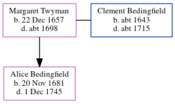

Margaret Bedingfield (née Twyman) 1657 - c1698
[ Home ] | [ Calendar ] | [ Surnames Index ] | [ Errors ] | [ Family History ]Margaret Twyman, the 8 times great-grandmother of Nigel Horne, was born in Birchington, Kent, England on 22 Dec 1657 and married Clement Bedingfield (with whom she had 1 child, Alice) in Margate, Kent, England on 2 Nov 16762 (St. John's the Baptist).
She died c. 1698 in Margate1 and was buried there on 29 Jul 16981,2.
Children
- Alice was born on 20 Nov 1681
Citations
- Kent, England, Tyler Index to Parish Registers, 1538-1874 Online publication - Provo, UT, USA: Ancestry.com Operations, Inc., 2010. This collection was indexed by Ancestry World Archives Project contributors.Original data - Frank Watt Tyler. The Tyler Collection. Canterbury, Kent, England: The Institute of Herald
- Familysearch.org (www.familysearch.org)
Family Tree
Map
Generated by ged2site. Last updated on Jul 3, 2024
Known Issues
Birth date (22 Dec 1657) has no citations